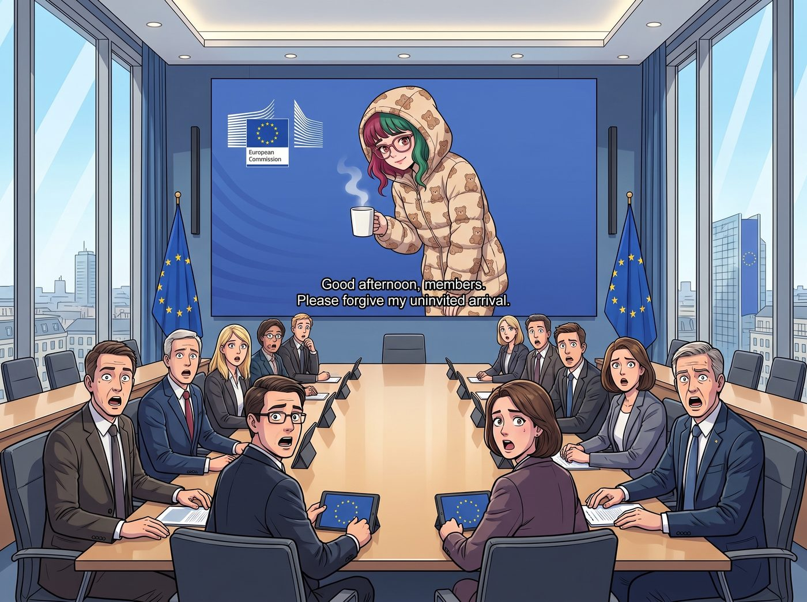

相互保證毀滅

當 Lily 在那台裝載著開源系統的筆記本電腦上，看到那篇關於 Windows 設下瀏覽器選擇障礙、引發微軟壟斷爭議的新聞時，二號車廂裡的氣壓瞬間下降了三度。
她沒有像 Chloe 那樣破口大罵資本主義，也沒有像 Victoria 那樣急著去查股價。實習生只是非常溫柔地推了推那副反光的圓框眼鏡，嘴角勾起了一抹宛如看到待宰羔羊般的純潔微笑。
「這簡直是對歐盟數位市場法最明目張膽的挑釁，而且手段粗糙得令人髮指。」Lily 軟糯的聲音在安靜的車廂裡迴盪，手指已經在鍵盤上化作一團殘影，「利用作業系統底層權限強行綁定預設瀏覽器，這是典型的暗黑模式與排他性濫用。」
一、跨大西洋的不速之客
不到三分鐘，她已經透過多重加密的 VPN 節點，無縫駭入了一個正在布魯塞爾舉行的歐盟執行委員會反壟斷局內部視訊會議。
當會議室大螢幕上突然出現一個穿著小熊睡衣、抱著一杯熱牛奶的十九歲亞洲女孩時，十幾位西裝革履的歐盟高級官員集體陷入了死寂。
「各位委員，下午好。請原諒我的不請自來。」Lily 甚至對著鏡頭乖巧地鞠了個躬，「我注意到貴局正在為如何對微軟的壟斷行為進行精準取證而發愁。作為一份見面禮，我剛剛向各位的加密信箱發送了一份長達三百頁的微軟底層 API 攔截第三方瀏覽器行為分析報告。」
Victoria 剛好路過工作台，瞥了一眼 Lily 螢幕上的歐盟官方標誌，手裡的氣泡水差點灑了一地。名媛嚇得花容失色，一把捂住嘴巴，用氣音發出崩潰的嘶吼：「Lily！妳在幹什麼？！妳居然在跟歐盟反壟斷專員視訊？！那可是市值兆級美金的巨頭！妳會害我們被微軟法務部從地圖上抹除的！」
Lily 溫柔地拍了拍 Victoria 的手背，示意她安靜，然後轉向鏡頭繼續交涉：
「根據相關條款，對於這種系統級別的壟斷壁壘，歐盟有權開出高達其全球年營業額百分之十的天價罰單。而我提供的這份代碼級別的證據，足以讓這場冗長的聽證會縮短兩年。作為回報，我不需要政治庇護，我只需要各位在下週二發布正式反壟斷調查公告前，給我四十八小時的內線做空準備期，以及一封由歐盟委員會蓋章的民間技術顧問免責聲明。」
視訊那頭的歐盟反壟斷專員們面面相覷。他們看著郵件裡那份完美得毫無破綻的技術鑒定與法理推演，再看看螢幕上這個大眼睛裡充滿了極致合規掠奪光芒的女孩，紛紛嚥了一口口水。
「老天啊……」坐在沙發上的 Chloe 已經徹底看傻了，她默默地把手裡的遊戲手把放下，「我以前以為拿著棒球棍去砸微軟總部的玻璃就已經很龐克了。沒想到真正的賽博龐克，是穿著小熊睡衣，聯合歐盟把微軟的底褲給罰沒了。」
Victoria 則在經歷了短暫的恐慌後，資本家的嗜血本能迅速佔據了上風。她瘋狂地在手機上點開 Chase 財團的內部交易終端，一邊咬著指甲一邊低聲唸叨：「四十八小時……我們有四十八小時的資訊差……如果動用信託基金加上十倍槓桿做空微軟……我們下個月就能把地中海那座度假島嶼買下來，自己封自己當公爵夫人了……」
二、急煞車
就在整個客廳陷入了即將肢解科技巨頭並暴富的狂熱氣氛時，Victoria 已經把手機貼在耳邊，正準備向信託經理下達十倍槓桿做空微軟的核彈級指令。
就在她即將喊出「賣出」的瞬間，一隻白皙、柔軟，卻帶著絕對不可抗拒力量的手，輕輕按下了她手機的掛斷鍵。
「Victoria 學姐，請立刻停止您的做空指令。我們必須把架在微軟脖子上的行政鍘刀，稍微往外挪兩公分。」
Lily 轉過身，將歐盟反壟斷局的視訊會議設為靜音，然後將筆記本螢幕轉向眾人。螢幕上是一則剛推送的科技新聞：Google 宣布推出名為「反重力」的專案，實現了與 Windows 系統底層子系統的深度原生整合。
「這是什麼意思？Google 要上天嗎？」Chloe 叼著棒棒糖，看著螢幕上那一堆對她來說宛如外星文的技術詞彙，「這跟我們把微軟告到破產有什麼關係？」
Lily 推了推圓框眼鏡，開始用一種堪比哈佛商學院客座教授的語氣，為這群廢土文青進行矽谷底層政治學的降維科普。
「各位學姐，簡單來說，這套底層子系統是微軟在 Windows 系統裡偷偷塞進去的一個完整的 Linux 靈魂。原本微軟和 Google 在作業系統和瀏覽器上是死敵，但現在，Google 的這個新專案選擇了直接與微軟的這套底層子系統進行原生整合。」Lily 拿著紅筆在白板上畫了兩個交疊的巨大圓圈，「這意味著，Google 正在把他們最核心的開發者生態和跨平台架構，直接嫁接到微軟的底層基礎設施上。」
Lily 轉向 Victoria，語氣變得無比冷靜且殘酷：「如果我們現在任由歐盟以底層權限壟斷為由，將 Windows 的核心架構徹底肢解，微軟確實會重傷。但同時，依賴這套子系統進行原生整合的 Google 開發環境也會瞬間面臨雪崩式的崩潰。這不再是一場單方面的屠殺，這是矽谷巨頭之間的相互保證毀滅。」
Victoria 的名媛大腦飛速運轉，她立刻意識到了這背後的金融連鎖反應，臉色微變：「所以如果微軟的底層被我們搞崩了，Google 的股價也會跟著陪葬？那我的單邊做空期權會因為整個納斯達克指數的系統性恐慌，而面臨極端的流動性枯竭！」
三、外科手術式的豁免
「完全正確，Victoria 學姐。」Lily 溫柔地笑了笑，重新打開了歐盟視訊會議的麥克風，但用手捂住了收音孔，「這就是為什麼我們不能一刀切斷微軟的大動脈。我們只能精準地挑斷他們在瀏覽器綁定上的靜脈，而必須在起訴書中明確豁免為第三方開發者提供底層子系統的必要整合權限。」
Lily 放開麥克風，換上了那種純潔無暇的語氣對著歐盟官員說道：「抱歉，各位長官，剛才網路有些波動。關於微軟的壟斷報告，我將在一小時內提交一份修正補丁。我們將起訴範圍嚴格限定在消費端介面，絕不波及企業級與開發者底層的開源協作。畢竟，我們是為了維護自由市場，而不是為了摧毀數位世界的基礎設施，對吧？」
歐盟官員們在螢幕那頭擦了擦冷汗，連連點頭，彷彿在聽從一位幕後財閥教父的聖旨。
「也就是說，」Max 抱著她的底片相機，試圖用最文青的思維來理解這場賽博戰爭，「這兩家平時在廣告裡互相嘲諷的大公司，私底下其實已經偷偷牽手，甚至共用同一個地下室了？」
「這叫競合關係，Maxine。」Victoria 鬆了一口氣，優雅地坐回沙發上，重新打開交易軟體，「既然不能直接核平微軟，Lily，那我們的投資策略是什麼？」
四、跨月價差的精算
「做對沖交易，學姐。」Lily 一邊在歐盟的報告裡修改著法律條款，一邊進行著金融部署，「嚴格來說，微軟只有單一股票代碼，我們沒辦法真的只做空消費者業務部門——這是個常見的簡化說法，但操作上並不是這樣運作的。我實際建立的是一組跨月價差選擇權：買入短天期、鎖定在歐盟裁決公告日前到期的賣權，用來精準捕捉這次瀏覽器壟斷判決引發的短線恐慌波動；同時搭配一組長天期的買權，用來承接底層子系統深度整合帶來的長期上漲動能。這樣一來，我們吃到的是這則特定壞消息的下跌，而不是整支股票的長期方向，兩者互不干擾。」
在這場涉及兆級企業的生死博弈中，實習生展現出了外科醫生般的恐怖精準度。
一直安靜在廚房裡忙碌的 Kate，這時端著一盤剛出爐的舒芙蕾走了出來。小天使完全沒有理會那些令人頭疼的代碼和股價，她只聽到了「反重力」這個詞。
「大家來吃甜點吧。」Kate 溫柔地將舒芙蕾分給每一個人，看著那些蓬鬆、高高鼓起的蛋糕體，臉上洋溢著聖潔的微笑，「我覺得 Google 的這個名字取得真好。能夠擺脫重力的束縛，就像天使的翅膀一樣自由呢。Lily 決定手下留情，一定是感受到了這種充滿愛的升力吧？」
看著小天使那毫無雜質的笑容，再看看剛把歐盟反壟斷局當成提線木偶、並策劃了一場華爾街對沖絞殺的 Lily，車廂裡的另外三個人默默地吃了一口舒芙蕾。她們決定永遠不要告訴 Kate，在這個被實習生統治的車廂裡，升力通常只意味著某家上市公司的股價正在被合法抽乾。